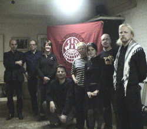
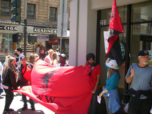

This page displays *all* news items from General Distribution Workers Industrial Union 660.
For an overview of the IU 660's history and contact information, please visit our homepage.
Submitted on Fri, 08/03/2007 - 12:45pm
The Industrial Workers of the World is taking on the coffee giant and its much-praised workplace practices
by Moira Herbst - Business Week
 Daniel Gross looks a lot like your average Starbucks (SBUX) barista. The 28-year-old is slim and clean-shaven, dressed in tan cargo pants and a T-shirt.
Daniel Gross looks a lot like your average Starbucks (SBUX) barista. The 28-year-old is slim and clean-shaven, dressed in tan cargo pants and a T-shirt.
But Gross would rather talk about worker solidarity than lattes and soy milk these days. A volunteer organizer for the Industrial Workers of the World (IWW), Gross claims his involvement with the union got him fired from a New York City Starbucks a year ago. Now he's preparing to go before a judge on Aug. 6 to make the case for himself and other baristas he says have been fired or intimidated for union activity. Seated in the one-room headquarters of the IWW's local in Queens (N.Y.), Gross says it's all part of a broader battle to change the way American companies treat their employees.
Submitted on Fri, 08/03/2007 - 12:36pm
 Report from Starbucks organizing in Europe
by Diane Krauthamer and Adam Lincoln
Throughout the summer, we have been touring Europe with presentations of film and discussion to draw attention to the efforts of Starbucks workers organizing with the IWW, and to bring to light the vicious union-busting campaign that has been waged by Starbucks Coffee Company. Comrades throughout the continent are expressing immense support with the six fired baristas in New York City and workers struggling in such retail jobs throughout the world. We have reached out to many baristas and have had nothing but positive reactions from fellow workers the IWW, the Confédération Nationale du Travail (CNT-F) in Paris and in Die Freie Arbeiterinnen- und Arbeiter Union (FAU-IAA) in Berlin. But what's important now is the reaction of Schultz & Co., in light of such events, as their reaction consists of worker intimidation and vicious PR manuevers that had not previously developed on this side of the Atlantic.
Submitted on Wed, 07/18/2007 - 3:03am
SEATTLE, WA (2007-07-06) Starbucks has long enjoyed a reputation as an excellent place to work. But now, Baristas in New York have compared the coffee giant to
Wal-mart -- for a series of attempts at union-bashing. The National Labor Relations Board is backing the union, and lawyers on both sides of the issue will argue before a New York judge on Monday (7-9-07) morning.
More from KPLU business and labor reporter Bellamy Pailthorp:
Submitted on Mon, 07/16/2007 - 12:47pm
For the third Saturday in a row, a small group of Bay Area IWW members distributed leaflets and information to Starbucks customers, passersby, and workers at one of the many Starbucks locations in the area in solidarity with the Starbucks Workers' Union organizing campaign.
Reactions were generally positive, and the Bay Area IWW pledges to continue the practice each Saturday at approximately noon at a different location each week. So far the Bay Area IWW has visited the following Starbucks coffee houses:
- June 30, 2007 - San Francisco at Powell and O'Farrell Streets (near Union Square).
- July 7, 2007 - Berkeley at Shattuck and Kittredge near the Shattuck Cinema where the IWW currently is negotiating their first contract.
- July 14, 2007 - Berkeley at Shattuck and Cedar near Andronicos.
Please join us next Saturday at noon a location to be determined in Oakland. Call Bruce at 510-355-2261.
Submitted on Tue, 06/26/2007 - 12:54pm
Sisters and Brothers:
Simone Gordon and the IWW Starbucks Workers Union [StarbucksUnion.org] need your solidarity now. Ms. Gordon is homeless and on welfare after Starbucks demoted her from shift supervisor to barista on New Year’s Day and cut her schedule to a stunning five hours per week. Simone’s store manager, Graham Higgins, falsely accused Ms. Gordon, who is African-American, of being racist against white people and stated that she wasn’t fit to be a leader in the store. The allegation that Ms. Gordon is racist is so patently absurd that we won’t even dignify it with a response. Suffice it to say, Simone Gordon, who has a white grandparent, opposes all forms of discrimination.